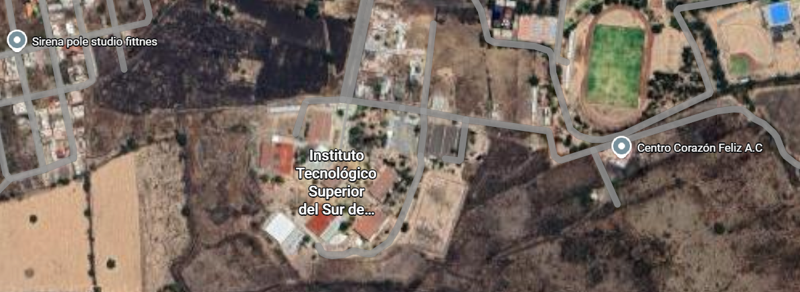

Nuestra Historia

Fundada en el corazón de Uriangato, Guanajuato, nuestra veterinaria nació del sueño de un grupo de apasionados por la salud animal. Desde nuestros inicios, nos hemos dedicado a ser más que una clínica: buscamos ser un hogar para aquellos que no tienen voz.A lo largo de los años, hemos crecido gracias a la confianza de la comunidad, convirtiéndonos en un referente de cuidado y amor por las mascotas en toda la región.